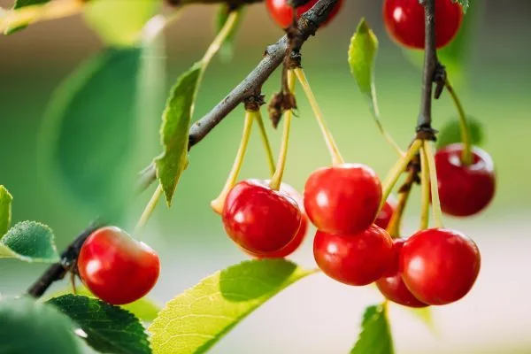

木耳，比你想的更適合代謝健康
2026-07-26
木耳含有的多醣體和膳食纖維，透過改善腸道菌相、降低飯後血糖峰值，對胰島素阻抗和代謝健康有幫助。

26 篇文章
木耳含有的多醣體和膳食纖維，透過改善腸道菌相、降低飯後血糖峰值，對胰島素阻抗和代謝健康有幫助。
新鮮橄欖油含有油橄欖素活性物質，以COX抑制機轉發揮消炎作用，效果遠優於布洛芬且完全不傷胃肝。

克菲爾與優格差異很大，克菲爾含 30 到 50 種以上微生物且有酵母菌，文獻顯示它對腸道菌多樣性與乳糖不耐可能更有幫助。

鱈魚肝罐頭的 omega-3 與維生素 D 含量遠高於沙丁魚，維生素 A 也極高但有攝取上限，作者建議每週兩到三次、每次一到兩湯匙。

2021 年隨機對照試驗中，糖尿病前期長者每週多吃兩罐沙丁魚，一年後 FINDRISC 極高風險比例由 37.3% 降到 7.7%，胰島素阻抗也下降。

Norwitz 吃一個月沙丁魚後變得耐冷，文中整理 2026 年 Cell 研究：EPA 轉成 12-HEPE，經 Olfr110 受體促進燃脂。

秋刀魚Omega-3含量最高達3.77克/100克，帶骨罐頭沙丁魚鈣質382毫克/100克最豐富，鯖魚最常見，選擇取決於補充優先順序。

咖啡中最有價值的成分可能是綠原酸而非咖啡因，文中說它與血糖控制相關且怕熱，淺焙保留的含量遠高於深焙。

洋車前子含豐富的阿拉伯木聚醣，每日攝取10至15克可使糖化血色素下降約0.97%，效果媲美某些口服降糖藥。

納豆中的納豆激酶能有效溶解血栓，經常食用納豆可降低約25%的心血管疾病死亡風險，效果遠優於其他大豆製品。

啤酒酵母富含生物活性鉻與 B 群，可能有助胰島素阻抗與能量代謝，但服用 MAOIs 者與痛風患者需特別留意，起始劑量為5公克。

Nick Norwitz 提出的沙丁魚斷食，用整尾沙丁魚在低熱量下補足優質營養，作者認為肌肉與能量不被犧牲，並介紹做法與台灣替代選擇。

十字花科蔬菜的DIM能平衡雌激素代謝、抑制腫瘤形成，每週吃三四次十字花科蔬菜並搭配生食來源以保留芥子酶活性最為理想。

菇類含豐富多醣體和麥角硫因，能調節免疫系統、保護心血管和大腦健康，每週食用兩碗煮熟的菇有益。

地瓜葉低熱量（100克42大卡）卻富含多酚、葉黃素和鉀，能延緩血糖上升、保護黃斑部、調控血壓，是營養密度極高的超級蔬菜。

黑米屬低升糖指數食物（42-50）、膳食纖維和花青素含量高，因含較多直鏈澱粉消化速度慢，更能穩定血糖和提升飽足感。

青花椰苗蘿蔔硫素含量遠高於成菜，能啟動Nrf2整條抗氧化路徑，調整腸道菌相並產生丁酸修復腸屏障，降低全身發炎。

抹茶因含200毫克兒茶素和28.5毫克茶胺酸，營養成分遠高於綠茶，可提升專注力並放鬆心情，建議每日飲用不超過兩杯。

蒟蒻含豐富的葡甘露聚醣纖維具有高吸水能力可延長飽足感，並能有效促進腸道內的有益益生菌增殖。

酸櫻桃含豐富褪黑激素與抗氧化物質，建議每天喝兩次240毫升可改善睡眠質量並可能降低尿酸水平。

咖啡綠原酸具抗氧化特性，每天喝一至三杯可維持端粒長度減緩老化，但過量攝取會升高血壓，建議日咖啡因限300毫克。

納豆含維他命K2等營養，研究顯示與停經後女性髖部骨密度、膽固醇改善及免疫力有關，一般建議成人每天吃約40-50克。

綠茶含咖啡因、L-茶氨酸和兒茶素，每天飲用三至五杯能提升代謝和認知功能降低多種癌症風險，但孕婦日咖啡因需限制。

頂級初榨橄欖油的酸度需低於0.8%，但酸價會因儲存條件改變非恆定值，同等級間比較才有意義，品評應含香氣和口感。

初榨橄欖油含豐富抗氧化多酚，煙點在207至230℃之間，適合各種烹調方式，選購應選深色玻璃瓶並確認品質標示。

可可含高濃度黃酮類與多酚能改善大腦功能，選擇85%以上、含糖量低的黑巧克力且避免鹼化加工最佳。